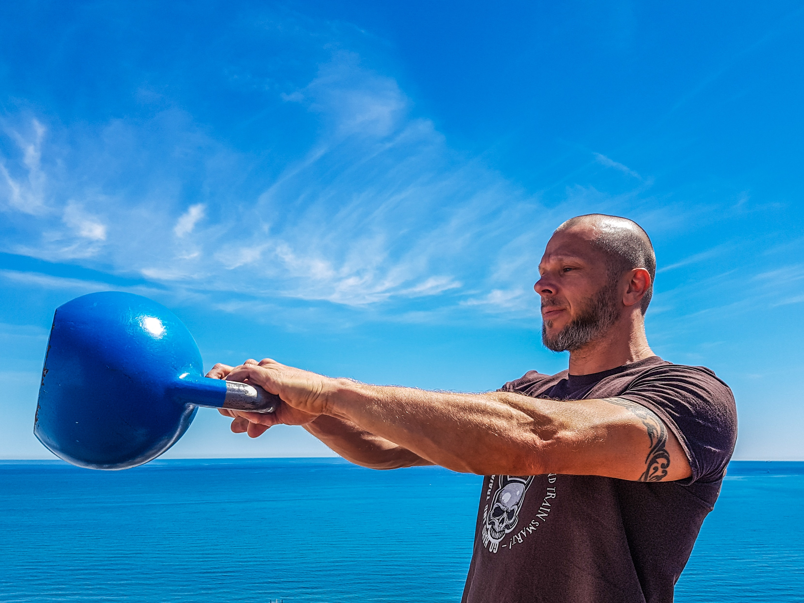

You want to have strong, muscular legs? Look no further! We've got all the leg workouts you could imagine all in one place! Let us help you get the thick thighs and squat booty of your dreams!
Leg Press
An excellent leg exercise for gym goers of all experience levels is the leg press! This move mostly works your quadriceps, which are the muscles that run down the front of your thighs between your knee and hip.Think of the leg press as a squat performed while seated!
How to achieve the leg press:
Sit on a leg press machine with your legs placed on the platform, approximately shoulder width apart. You'll want to have the seat at a height that makes you bend your knees as though you're deep in a squat.
Press the platform until your legs are fully extended in front of you, lifting the seat and pushing your body backwards.Be careful not to lock your knees. Try to keep your legs and torso at a 90-degree angle.
Inhale and bend your knees so that the platform lowers and your upper and lower legs make a 90-degree angle.
Exhale and focus your energy through the heels of your feet and push using your quadriceps to return yourself to a position where your legs are fully extended in front of your body.
There are a few variations of this machine where your body may be positioned with your legs above or below your torso. The motions will remain the same regardless of the angle that the machine places you.
Squats
A classic exercise is the squat. The squat can be performed with or without weights. The barbell squat is one of the most tried and true strength exercises for all experience levels, working the quadriceps and if you're doing barbell squats, your core as well!
To do a barbell squat:
Begin in a standing position with your feet placed hip-width apart, and a barbell positioned on your back so that it's supported on top of your traps. Keep your chest up and your head facing forward.
Slowly begin to drop your body by bending your knees, keeping your hips back and your spine straight. Make sure that you keep your knees aligned with your feet as they move forward.
Drop until your upper legs make contact with your lower legs (or however deep you can comfortably descend) and then reverse the motion, pushing the weight upward until you return to an upright standing position.
Don't push yourself to put too much weight on the barbell when you're beginning to do squats. As exciting as it is to see the capabilities of your body, no amount of ego lifting will compensate for the embarassment and injury that come with heavy weights and poor form. Listen to your body and only perform motions that are comfortable.
Workout of the Week!
This week, we're focusing on full body strength workouts, and we're confident that you'll enjoy the kettle bell snatch as much as we have!

The kettle bell snatch works a whole range of muscles, including the hamstrings, quads, back, and shoulders. Combining the motions of a squat with the upward swing of a kettle bell will have you feeling every muscle in your body the next day!
Above: Cheryl, Beverly, and Nelda from Sheboygan, Wisconsin love working out together, and they love to use We Want Workouts! to plan out their gym trips!
Above: Cheryl, Beverly, and Nelda from Sheboygan, Wisconsin are the only users to submit any photos so far, so you'll get to look at their bright, smiling faces until more people send us fresh content to post!
We love seeing you looking and feeling your best! Want to share your workout or progress photos? Send an email to friends@wewantworkouts.com and see yourself on our front page!
Sponsored by: Products! Need something? Buy Products!